Some extra geoms, scales, and themes for ggplot.
Install
To install the stable version from CRAN,
install.packages('ggthemes', dependencies = TRUE)Or, to install the development version from github, use the devtools package,
library("devtools")
install_github(c("hadley/ggplot2", "jrnold/ggthemes"))How to use
For a quick tutorial, check out Rafael Irizarry’s book.
Examples
library("ggplot2")
library("ggthemes")
mtcars2 <- within(mtcars, {
vs <- factor(vs, labels = c("V-shaped", "Straight"))
am <- factor(am, labels = c("Automatic", "Manual"))
cyl <- factor(cyl)
gear <- factor(gear)
})
p1 <- ggplot(mtcars2) +
geom_point(aes(x = wt, y = mpg, colour = gear)) +
labs(
title = "Fuel economy declines as weight increases",
subtitle = "(1973-74)",
caption = "Data from the 1974 Motor Trend US magazine.",
x = "Weight (1000 lbs)",
y = "Fuel economy (mpg)",
colour = "Gears"
)
p1 +
scale_color_calc() +
theme_calc()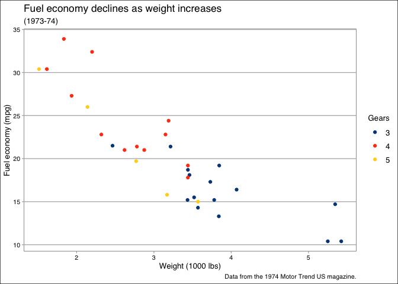
p1 + theme_clean()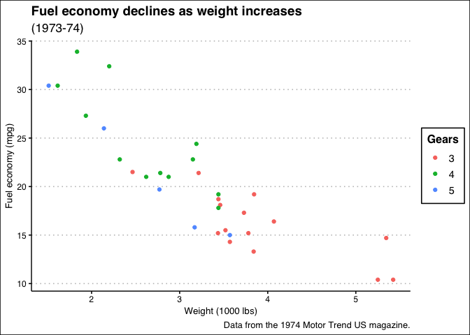
p1 + theme_economist() +
scale_colour_economist()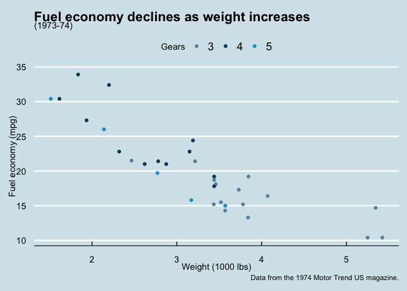
p1 + theme_excel() +
scale_colour_excel()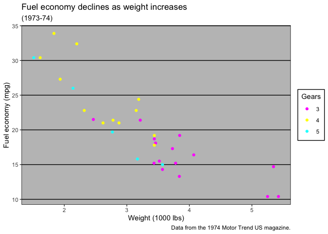
p1 + theme_excel_new() +
scale_colour_excel_new()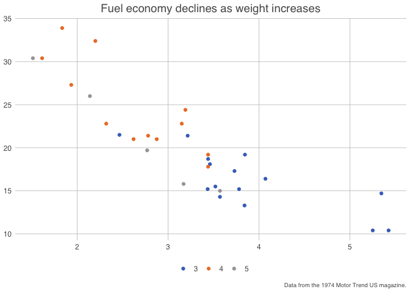
p1 + theme_igray()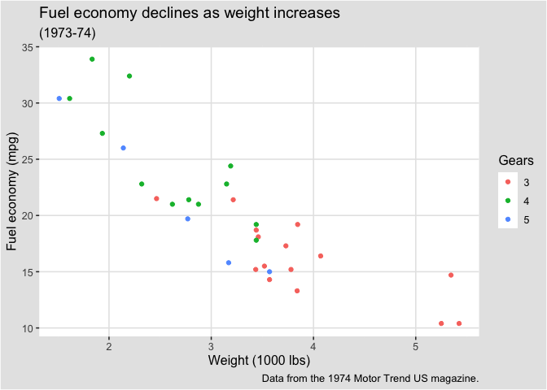
p1 + theme_par()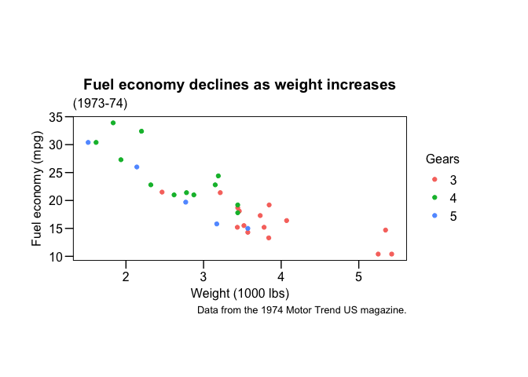
p1 + theme_fivethirtyeight()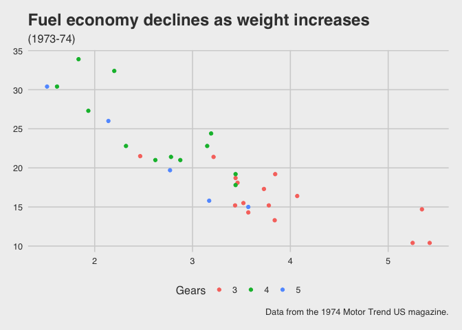
p1 + theme_few() +
scale_colour_few()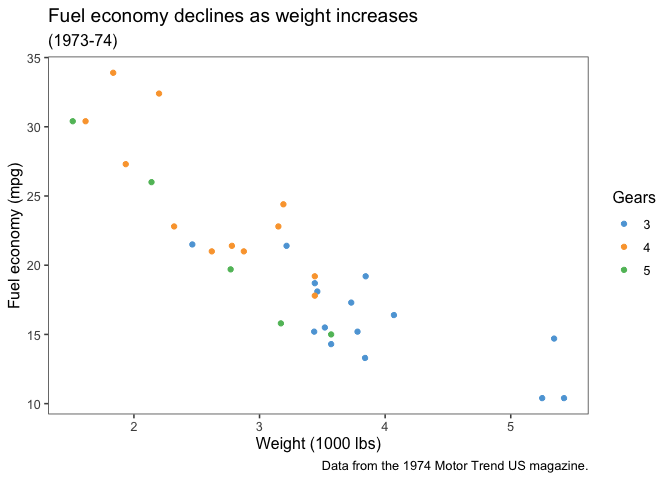
p1 + theme_solarized() +
scale_colour_solarized()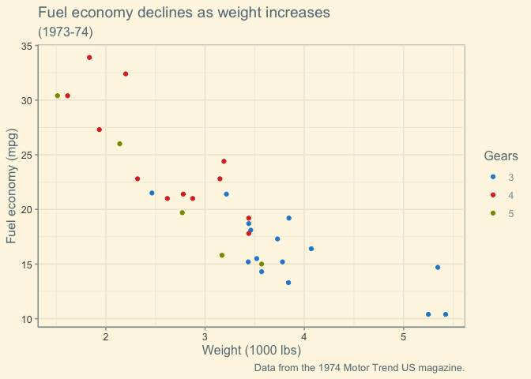
p1 + theme_solarized(light=FALSE) +
scale_colour_solarized()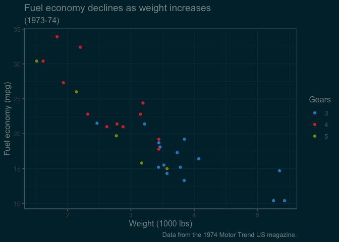
p1 + theme_solid()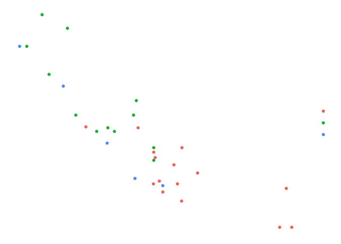
p1 + theme_tufte()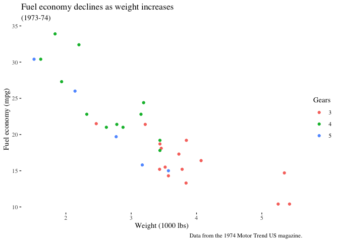
p1 + theme_wsj(base_size = 8) + scale_color_wsj()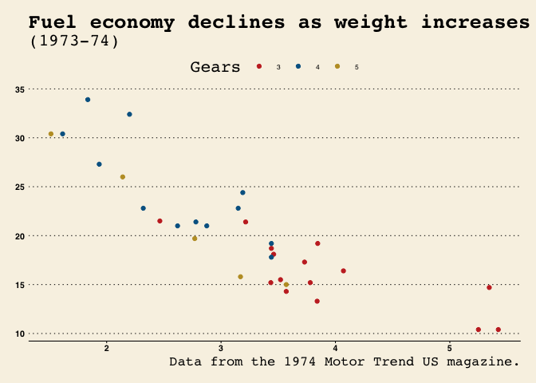
p1 + scale_color_colorblind()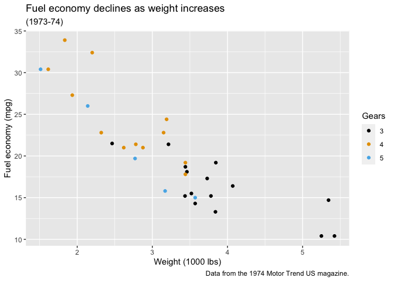
p1 + scale_color_tableau()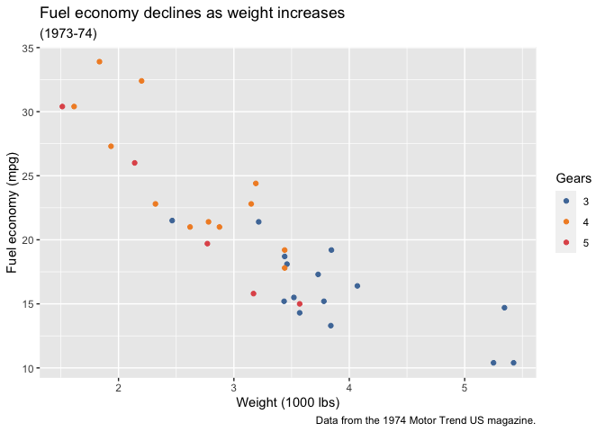